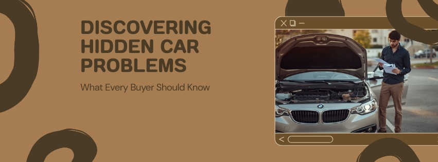
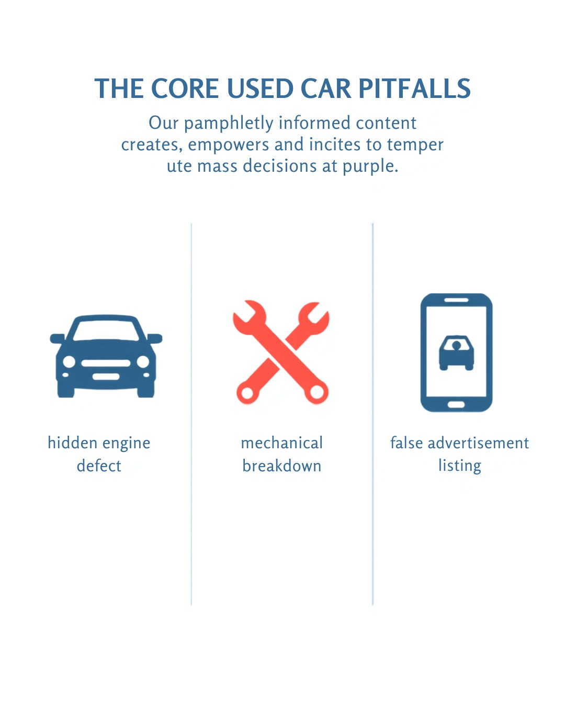
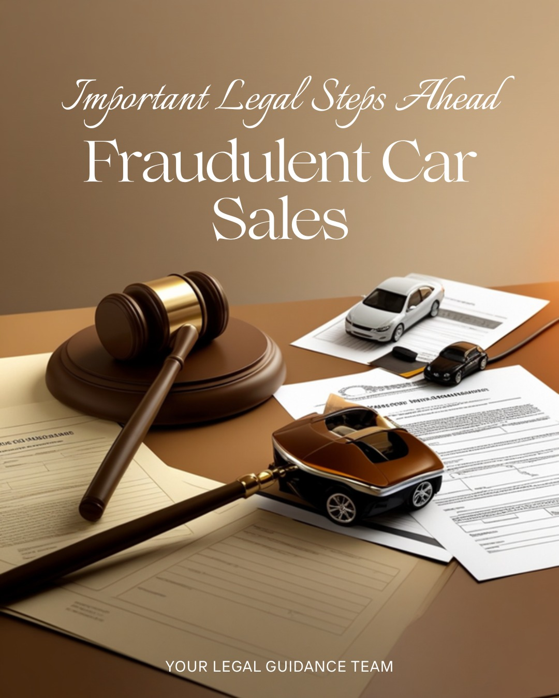
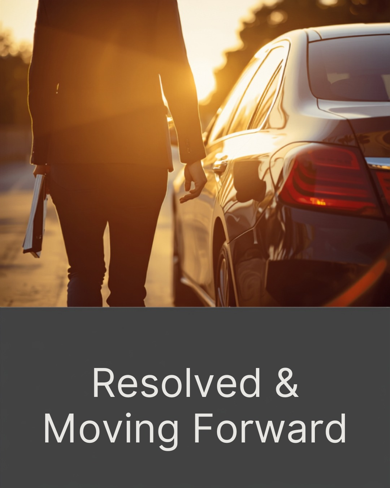

اگه بعد از خرید فهمیدم خودرو مشکل داشته — چیکار کنم؟

وقتی معامله تموم شده ولی مشکل تازه شروع شده
یه پیام گرفتم از یه خانم که نوشته بود: «سه هفته پیش یه پراید خریدم. دیروز بردم مکانیک، گفت موتورش آب خورده. فروشنده هم جواب تلفن نمیده. حالا چیکار کنم؟» این پیام رو صبح خوندم. تا شب پنج تا پیام شبیه بهش داشتم. این یه اتفاق نادر نیست. این یه بیماری مزمن بازار خودرو ایرانه.
راستش رو بخواهید، وقتی در بسته شد و کلید دستت رسید، احساس میکنی دیگه تموم شد. ولی خرید خودرو مشکلدار به معنای از دست رفتن پولت نیست — اگه بدونی چیکار کنی. من توی ۱۵ سال کارشناسی، چند صد نفر رو دیدم که بعد از خرید فهمیدن گول خوردن. بعضیها پولشون رو پس گرفتن. بعضیها نه. فرقشون فقط یه چیز بود: سرعت عمل و داشتن مدرک.
اول بفهم چه نوع مشکلی داری
همه مشکلات یه جور نیستن. قبل از هر اقدامی باید بدونی با چی طرفی، چون مسیر قانونی هر کدوم فرق داره.

شناخت نوع مشکل، اولین قدم برای پس گرفتن حقته
نوع اول — مشکل پنهان که فروشنده میدونست
موتور آبخورده، فریم جوشکاری شده، کیلومتر دستکاری شده، رنگآمیزی پنهانشده. اینا مشکلاتیان که فروشنده عمداً پنهانشون کرده. این تعریف قانونی کلاهبرداری داره و قویترین پرونده رو داری.
نوع دوم — خرابی که بعد از معامله پیش اومده
یه چیزی که موقع خرید سالم بود ولی بعداً خراب شد. اینجا اثبات سختتره. باید ثابت کنی مشکل قبل از فروش وجود داشته.
نوع سوم — اطلاعات غلط در آگهی
نوشته بود «بدون رنگ» ولی رنگ داشت. نوشته بود «یهدست» ولی تصادفی بود. هر اطلاعات غلطی در آگهی، مدرک علیه فروشندهست — حتی اگه شفاهی گفته باشه. اسکرینشات آگهی رو داری؟
قدم اول — مدارک جمع کن (قبل از هر کاری)
باور کنید یا نه، اکثر آدمهایی که پروندهشون شکست خورد، مشکل قانونی نداشتن. مشکل مدرکی داشتن. قاضی به احساس نگاه نمیکنه. به مدرک نگاه میکنه.
این مدارک رو داری؟ پروندهات قویه
- مبایعهنامه یا قولنامه (حتی دستنویس)
- اسکرینشات آگهی دیوار / شیپور / تلگرام
- پیامهای واتساپ یا تلگرام با فروشنده
- فاکتور پرداخت یا رسید بانکی
- گزارش کارشناسی (اگه داری)
- فاکتور تعمیرگاه که مشکل رو تأیید کرده
- عکس یا ویدیو از مشکل خودرو
- شماره و مشخصات فروشنده
قدم دوم — یه کارشناس مستقل بگیر
این مهمترین قدمه. قبل از هر شکایتی، باید یه کارشناس رسمی دادگستری یا کارشناس معتمد خودرو، مشکل رو روی کاغذ تأیید کنه. نظر مکانیک محله کافی نیست. باید مستند رسمی باشه.
کارشناس رسمی دادگستری رشته خودرو پیدا کنی. یه گزارش میده که توش مشخصه: مشکل چیه، از کِی بوده، و آیا قابل پنهانکاری بوده یا نه. این گزارش قویترین سلاح توی دادگاهه.
قدم سوم — اول مذاکره، بعد شکایت
مذاکره با مدرک — قبل از دادگاه
یه بار مشتری داشتم — آقا رضا — که یه سمند با فریم جوشکاری شده خریده بود. اومد پیشم. گفتم: «اول برو باهاش حرف بزن. ولی نه التماس. با مدرک برو.» رفت. گزارش کارشناسی رو گذاشت جلوی فروشنده. گفت: «یا ۳۰ میلیون پس میدی، یا فردا دادگاه.» فروشنده همون روز ۲۵ میلیون داد. دادگاه رفتن ۶ ماه طول میکشه و هزینه داره. فروشنده هم این رو میدونه.
مذاکره رو کتبی انجام بده — واتساپ یا پیامک. نه تلفنی. چون اگه قبول کرد، مدرک داری. اگه تهدید کرد، مدرک داری. اگه جواب نداد، مدرک داری که تلاش کردی.
قدم چهارم — اگه مذاکره جواب نداد: مسیر قانونی

مسیر قانونی — قدم به قدم
شکایت کیفری برای کلاهبرداری
اگه ثابت بشه فروشنده عمداً مشکل رو پنهان کرده، این کلاهبرداریه. به دادسرای محل وقوع معامله برو. شکواییه بنویس. مدارکت رو ضمیمه کن.
دعوای حقوقی برای فسخ معامله یا ارش
از طریق دادگاه حقوقی میتونی یا معامله رو فسخ کنی (خودرو برگرده، پول برگرده) یا «ارش» بگیری — یعنی مابهالتفاوت قیمت خودرو سالم و معیوب.
شکایت از نمایشگاه (اگه از نمایشگاه خریدی)
نمایشگاهدارها مجوز دارن و تحت نظر اتحادیهان. شکایت به اتحادیه نمایشگاهداران اهرم فشار قویتری نسبت به دادگاه داره — و سریعتره.
گزارش به پلیس فتا (برای آگهیهای آنلاین)
اگه از دیوار یا شیپور خریدی و کلاهبرداری بوده، پلیس فتا (فضای تولید و تبادل اطلاعات) صلاحیت رسیدگی داره. به سایت پلیس فتا مراجعه کن.
مراجعه به سازمان حمایت از مصرفکنندگان
اگه خودرو از یه مجموعه رسمی خریدی، سازمان حمایت مصرفکنندگان میتونه پرونده رو پیگیری کنه. بعضی اوقات سریعتر از دادگاهه.
اگه از نمایشگاه خریدی — یه مسیر سادهتر داری
نمایشگاهدارها مجوز دارن. این مجوز، اهرم فشاره. اگه از یه نمایشگاه دارای مجوز خریدی، قبل از دادگاه این کارها رو بکن:
- شماره مجوز نمایشگاه رو از تابلوی مغازه بگیر
- به اتحادیه نمایشگاهداران خودرو شهرت شکایت کتبی بده
- به اداره صنعت و معدن و تجارت (سابق بازرگانی) هم گزارش بده
- تهدید به گزارش به رسانهها — اغلب کافیه که فروشنده کوتاه بیاد
جمعبندی — سریع عمل کن، با مدرک عمل کن

این ۵ قدم رو دنبال کن
در واقع، بازار خودرو ایران هنوز جای خطره. ولی قانون ابزار داره — اگه بدونی چطور ازش استفاده کنی. سه چیز همه چیز رو تغییر میده: سرعت، مدرک، و جدیت.
فروشندهای که میدونه طرف مقابلش گزارش کارشناسی داره، اسکرینشات آگهی داره، و میدونه چطور شکایت کنه — اون فروشنده ترجیح میده توافق کنه. این رو از تجربه میگم. هیچکس دوست نداره پرونده کیفری داشته باشه.
سوالات متداول
اگه قرارداد نداشتم چیکار کنم؟
قرارداد نداشتن سختتره ولی غیرممکن نیست. پیامهای واتساپ، پیامک، رسید بانکی، و شاهدی که همراهت بوده میتونه جای قرارداد رو بگیره. ولی دفعه بعد، حتی یه کاغذ ساده دستنویس هم از هیچی بهتره.
فروشنده جواب تلفن نمیده — چیکار کنم؟
همین خودش مدرکه. اسکرینشات از تماسهای بیپاسخ بگیر. یه پیام رسمی واتساپ بفرست که مشکل رو توضیح بده و بخوای جواب بده. اگه جواب نداد، به دادسرا مراجعه کن — فرار از پاسخگویی جرم داره.
چقدر طول میکشه پول رو پس بگیرم؟
اگه مذاکره جواب بده: یک تا چند هفته. اگه اتحادیه ورود کنه: یک تا دو ماه. اگه دادگاه بره: شش ماه تا یک سال یا بیشتر. به همین دلیله که مذاکره قوی با مدرک، بهترین مسیره.
آیا میتونم خودرو رو نگه دارم و خسارت بگیرم؟
بله. به این «ارش» میگن — جبران خسارت بدون فسخ معامله. مثلاً اگه خودرو ۵۰۰ میلیون خریدی ولی ارزش واقعیش ۴۰۰ میلیون بوده، میتونی ۱۰۰ میلیون ارش بخوای. کارشناس دادگستری این مبلغ رو تعیین میکنه.
کارشناسی که موقع خرید گرفتم گفت سالمه — اونم مقصره؟
اگه کارشناس مشکل رو ندیده یا عمداً پنهان کرده، بله — مقصره. کارشناسان دارای پروانه رسمی در قبال گزارششون مسئولیت حقوقی دارن. میتونی جداگانه علیه کارشناس هم شکایت کنی.
اگه خودرو از دوست یا فامیل خریدم چی؟
قانون فرقی نمیکنه. ولی واقعیت اینه که پیگیری از آدمهای آشنا سختتره. توصیه میکنم اول مذاکره صادقانه کنی و مشکل رو توضیح بدی. اگه همکاری نکرد، حق قانونیت رو داری — فارغ از رابطه.